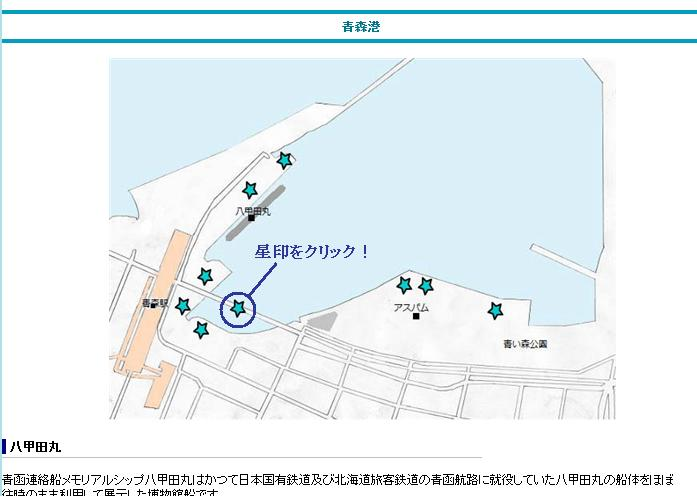
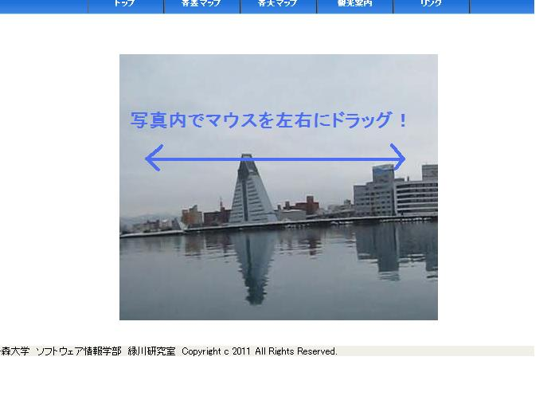
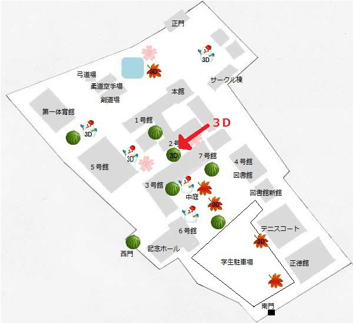
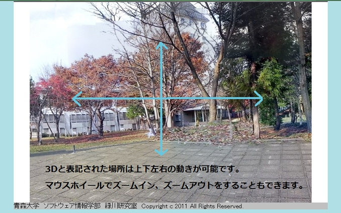

青森大学 緑川研究室では数年前より創作ゼミナール、卒業研究として斜陽館や弘前城、八甲田丸など青森県内の観光地についての研究をしていました。
今年度も青森の素晴らしさを何らかの方法で全国の人々に伝えたいと考え、私達は青森県内の観光地の写真を撮影、編集しホームページ上で公開していくことにしました。それがAomori Viewです。
今年度の新入生アンケートの「大学案内やホームページに載せてほしいことは何か」という問で38.4%が大学周辺の環境について載せてほしいと答えていたことを知った私達は、Aomori Viewと同時進行で青森大学内、青森大学周辺の環境を撮影した物を制作しました。それがAodai Viewです。
作品をご覧いただく為にはJava2-JREとJava3D-JREのインストールが必要になります。
Aomori Viewの使い方はとても簡単です！
時間のある方は是非説明動画を御覧ください！
動画が見れない、時間の無い方はこちらです！
地図から見たい場所を選んでクリックします。
写真をクリックしたら、そのまま左右に動かすだけで360°の景色を見ることができます。
撮影箇所の中には3Dと表記されている所があります。
3Dと表記された場所は左右上下に動かすことが可能です。
